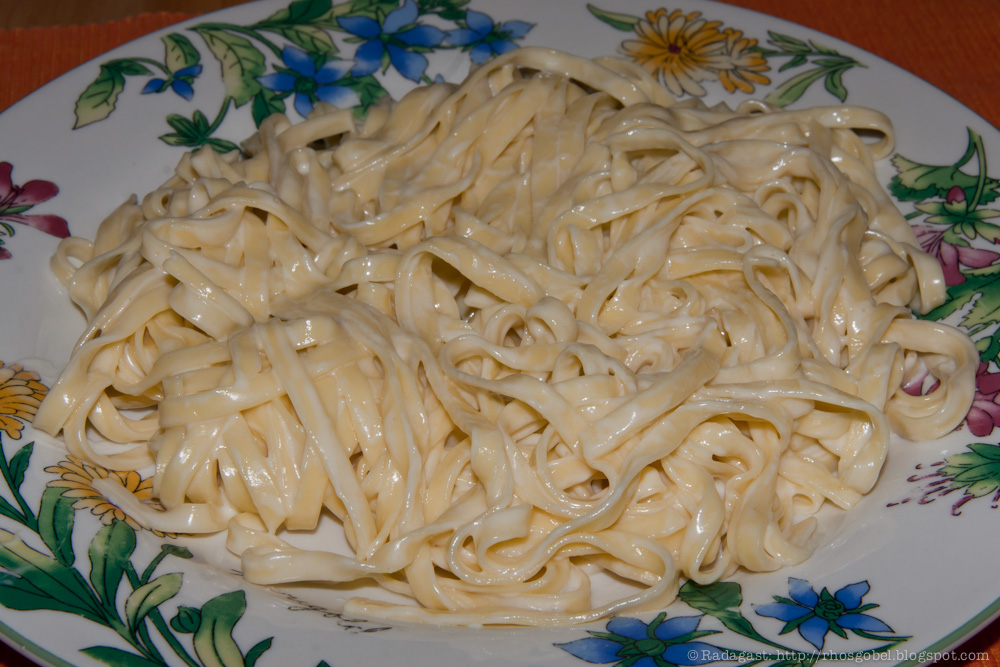

Delicious Fettuccine Alfredo. Photo by Ragadast. Licensed under CC BY-NC 2.0
DEED
Description
Fettuccine Alfredo, also known as the indulgent "fettuccine al burro," is a luscious Italian pasta masterpiece.
This dish features fresh, wide ribbons of fettuccine luxuriously entwined with velvety butter and lavish
Parmesan (known in Italy as "pasta al burro e parmigiano"). As the Parmesan gracefully melds into a creamy
cascade, it orchestrates a masterpiece of flavors that cocoon the pasta in a sumptuous and opulent cheese sauce.
Ingredients
250g fettuccine pasta
150g butter
150g Parmigiano Reggiano or Grana Padano grated cheese
salt and pepper
Steps
Boil water in the pot. Add salt and throw in fettuccine once the water boils.
Cook the pasta for 1-2 minutes, stirring it.
While pasta is being cooked, carve butter into small pieces and melt it on the frying pan at medium heat. Be
careful not to burn it!
Pour 3-4 tablespoons of water from the pot to make the sauce denser and creamier.
When pasta is cooked al dente, filter out the water, leaving a couple of spoons.
Put the pasta on the frying pan and stir.
After stirring, turn off the heat, add grated cheese and the remaining water, then stir. If the sauce ends
up too dry, add extra 2-3 tablespoons of water.